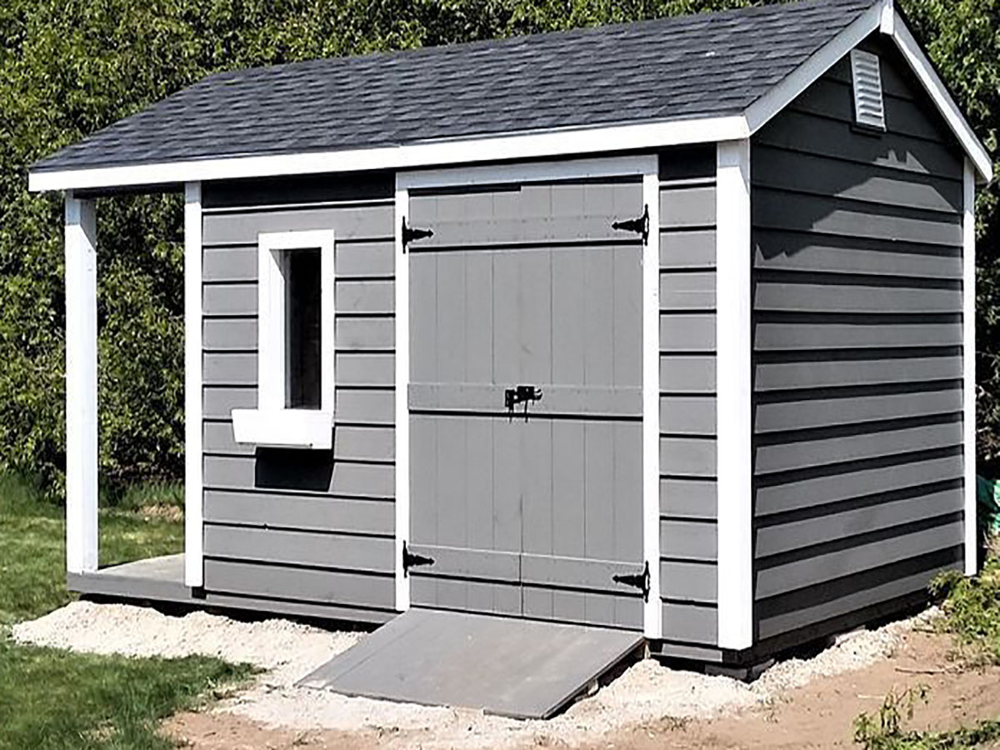
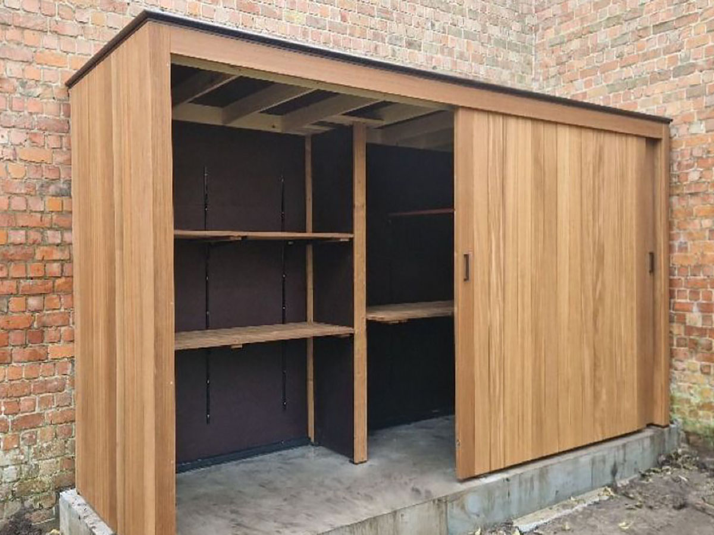
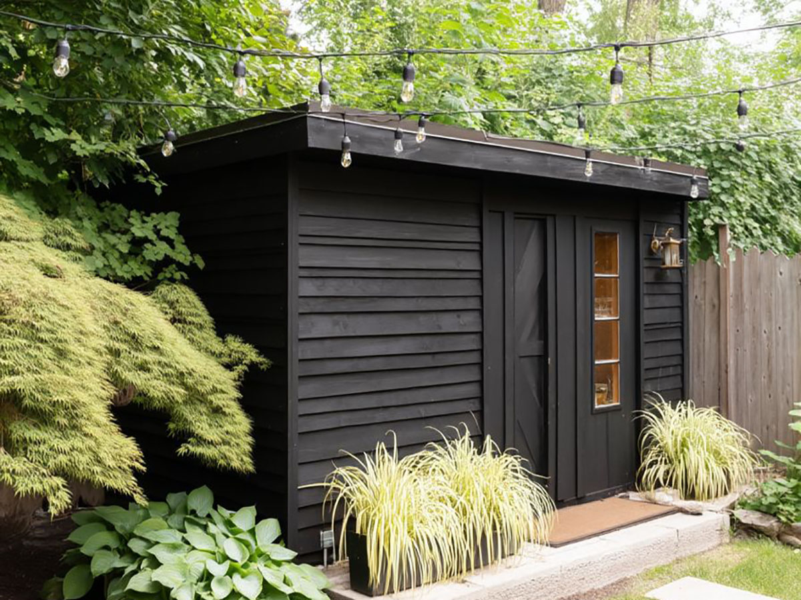
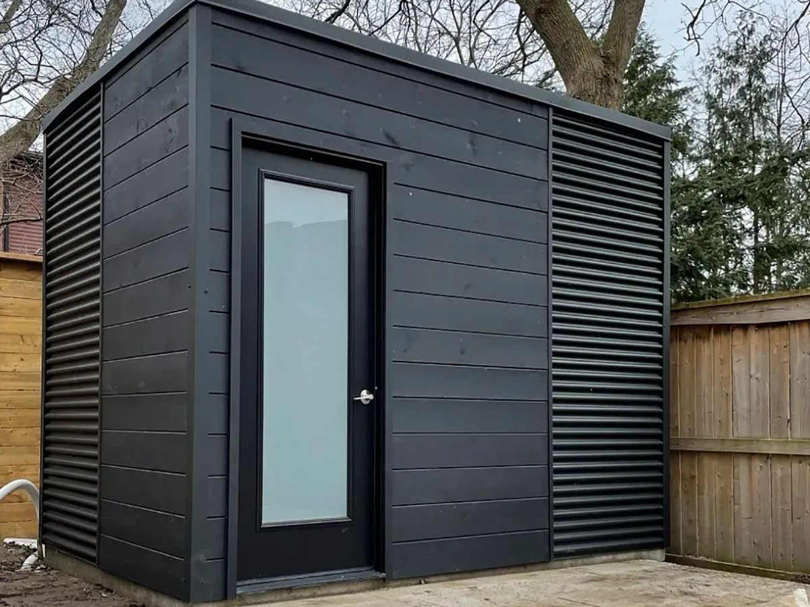

Хозблоки под ключ
Строительство хозблоков под ключ в Самаре
Строим надежные и функциональные хозблоки для дачи и частного дома под любые задачи: хранение инвентаря, мастерская, бытовка, летняя кухня или помещение для хозяйственных нужд.
Индивидуальные размеры • Быстрое строительство • Надежные материалы • Под ключ с установкой
Примеры наших работ
Небольшая подборка хозблоков, которые мы строим: для хранения, с мастерской, с навесом и утепленные варианты.



Изготовление и строительство хозблоков на заказ
Хозблок - это одно из самых практичных и востребованных строений на участке. Он позволяет организовать удобное пространство для хранения инструментов, оборудования, садового инвентаря, строительных материалов и других хозяйственных вещей. При правильном проектировании хозблок может выполнять сразу несколько функций: быть мастерской, бытовкой, летней кухней, складом или даже дополнительным техническим помещением.
Мы занимаемся строительством хозблоков в Самаре и Самарской области под ключ, с учетом реальных задач клиента. В отличие от типовых решений, индивидуальный проект позволяет заранее продумать планировку, размеры, расположение дверей и окон, необходимость утепления, зонирование пространства и удобство использования.
В результате вы получаете не просто временное строение, а полноценный функциональный объект, который органично вписывается в участок и служит долгие годы.
Почему стоит заказать хозблок у нас
- Проектирование под ваши задачи и особенности участка
- Индивидуальные размеры и гибкая планировка
- Надежные и долговечные материалы
- Возможность утепления и круглогодичного использования
- Аккуратный внешний вид и соответствие стилю участка
- Полный цикл работ - от идеи до установки
Зачем нужен хозблок на участке
Со временем на любом участке появляется большое количество вещей, которые необходимо где-то хранить: инструменты, садовая техника, строительные материалы, дрова, бытовые принадлежности. Хранить все это в доме неудобно, а оставлять на улице - нерационально и небезопасно.
Хозблок решает эту проблему, позволяя организовать отдельное пространство для хозяйственных нужд. Это не только упрощает повседневную жизнь, но и помогает поддерживать порядок на участке.
При грамотном подходе хозблок становится универсальным строением, которое может совмещать сразу несколько функций: хранение, рабочую зону, мастерскую, помещение для животных или даже временное жилье.
Какие хозблоки мы строим
Хозблоки для хранения
Классический вариант для хранения садового инвентаря, инструментов, техники и расходных материалов. Простая и удобная конструкция, которая помогает поддерживать порядок на участке.
Хозблоки с мастерской
Подходят для тех, кто занимается ремонтом, строительством или творческой работой. Внутри можно организовать полноценное рабочее пространство с удобной планировкой.
Хозблоки с дровником
Комбинированные решения, где часть пространства используется для хранения дров, а часть - для хозяйственных нужд. Удобный вариант для частных домов с печным отоплением или баней.
Утепленные хозблоки
Такие конструкции подходят для круглогодичного использования. Внутри можно разместить мастерскую, бытовое помещение или использовать его как временное жилье.
Хозблоки с навесом
Дополнительно к закрытому помещению можно предусмотреть навес для хранения техники, дров, строительных материалов или организации рабочей зоны на улице.
Строительство хозблоков в Самаре и Самарской области
Если вы планируете строительство хозблока в Самаре, важно сразу продумать не только размеры, но и функциональность будущего строения. Хозблок должен быть удобным, практичным, устойчивым к погодным условиям и соответствовать задачам, которые вы на него возлагаете.
Мы строим хозблоки под ключ в Самаре и Самарской области, учитывая особенности участка, пожелания клиента и предполагаемое использование. Это может быть компактное помещение для хранения или полноценный многофункциональный объект с разделением на зоны.
Индивидуальный подход позволяет избежать типичных ошибок, когда строение оказывается неудобным, слишком маленьким или не подходит под реальные нужды. Мы заранее продумываем все детали, чтобы хозблок был максимально практичным и удобным в эксплуатации.
Кому подойдет строительство хозблока
Для частных домов
Хозблок помогает организовать хранение и освободить пространство в доме от лишних вещей.
Для дачи
Незаменимое решение для сезонного проживания и хранения садового инвентаря и инструментов.
Для мастерской
Отличный вариант для организации рабочего пространства на участке.
Для хозяйственных нужд
Подходит для размещения оборудования, хранения материалов или создания универсального помещения.
Материалы и качество строительства
При строительстве хозблоков важно использовать надежные и проверенные материалы, которые выдерживают нагрузки и погодные условия. Мы подбираем решения в зависимости от назначения строения, его размеров и условий эксплуатации.
Особое внимание уделяется прочности конструкции, устойчивости к влаге, долговечности и удобству использования. В результате хозблок служит долго и не требует постоянного ремонта.
Хозблоки по индивидуальному проекту
Каждый участок и каждая задача уникальны, поэтому мы предлагаем строительство хозблоков по индивидуальным проектам. Это позволяет заранее учесть все нюансы и сделать строение максимально удобным.
- размеры и форма строения;
- количество помещений;
- наличие окон и дверей;
- утепление;
- дополнительные зоны (навес, дровник);
- внешний вид и отделка.
Такой подход позволяет получить именно тот результат, который нужен, без компромиссов.
Как проходит строительство
1. Консультация
Обсуждаем задачи, размеры и особенности участка.
2. Подбор решения
Предлагаем оптимальный вариант конструкции и планировки.
3. Расчет стоимости
Формируем понятную смету с учетом всех параметров.
4. Строительство
Выполняем работы в согласованные сроки.
5. Сдача объекта
Передаем готовый хозблок, полностью готовый к эксплуатации.
Сколько стоит построить хозблок
Стоимость строительства хозблока зависит от размеров, материалов, сложности конструкции, наличия утепления и дополнительных элементов. Каждый проект рассчитывается индивидуально.
Оставьте заявку, чтобы получить точный расчет под ваши задачи и бюджет.
Часто задаваемые вопросы
Можно ли сделать хозблок по моим размерам?
Да, мы строим хозблоки по индивидуальным размерам.
Можно ли использовать хозблок зимой?
Да, при необходимости мы делаем утепленные конструкции.
Сколько времени занимает строительство?
Сроки зависят от сложности проекта, обычно от нескольких дней.
Можно ли добавить навес?
Да, хозблок можно дополнить навесом или другими элементами.
Построим хозблок под ваши задачи
Хозблок - это не временная постройка, а важная часть участка. Мы поможем создать удобное, надежное и функциональное пространство, которое будет служить вам долгие годы.
Оставьте заявку, чтобы получить консультацию и расчет стоимости.